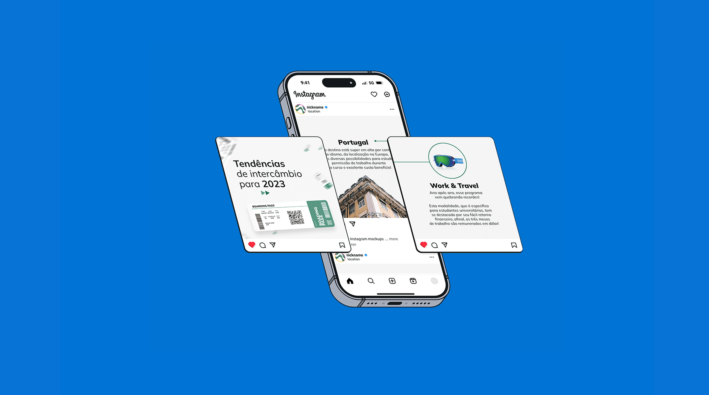
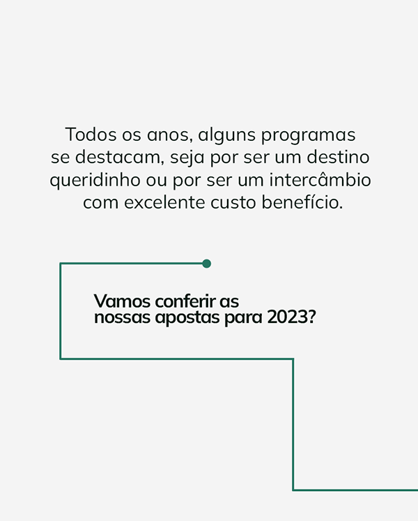
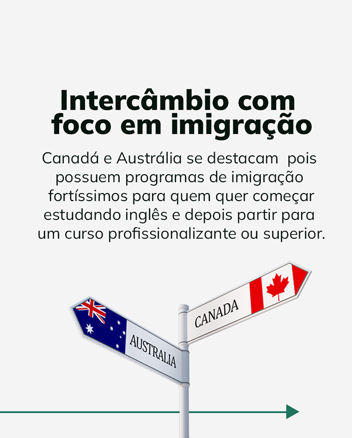
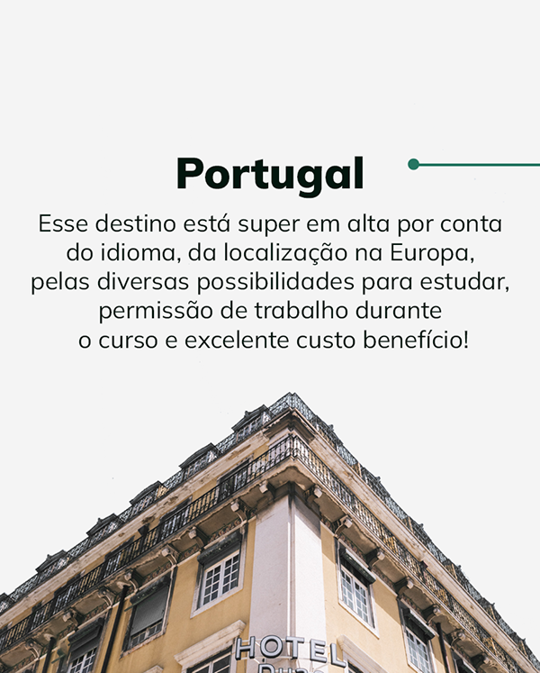
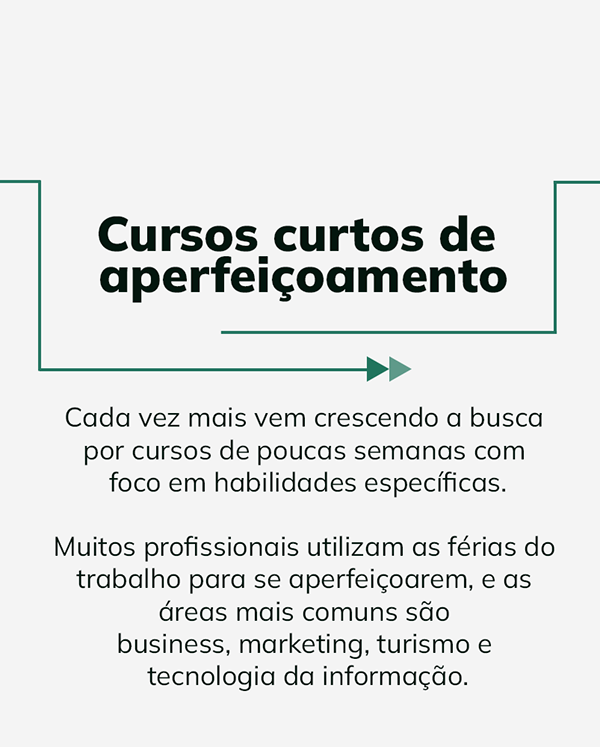
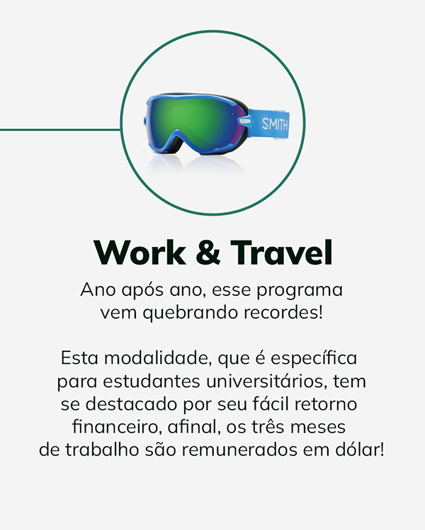

Social Media Content
O que foi desenvolvido
O projeto consistiu na criação de uma série de conteúdos estratégicos para as redes sociais de uma agência de intercâmbios. O foco principal foi o desenvolvimento de um carrossel contínuo, projetado para informar sobre as tendências de intercâmbio para o ano de 2023.
A solução visava alimentar o feed com informações relevantes de forma dinâmica, utilizando um layout que incentiva a interação e o deslize contínuo para a absorção de todos os dados apresentados.
Aprendizados e Técnicas
Para o desenvolvimento do carrossel contínuo, foi aplicada uma técnica de diagramação que garante a fluidez visual entre os quadros, criando a percepção de uma peça única e infinita. Isso exigiu um planejamento cuidadoso da continuidade dos elementos gráficos e da tipografia.
A escolha cromática e o tratamento das imagens foram fundamentais para transmitir a energia e as possibilidades que o intercâmbio proporciona, mantendo a autoridade e o profissionalismo da agência no mercado.
Habilidades
Demonstração




